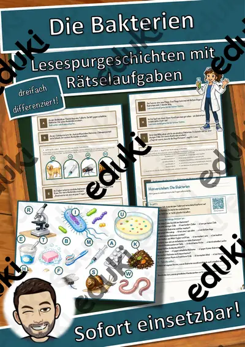

Das Mikroskop – Lesespurgeschichte mit Rätselaufgaben (Klasse 8)
Mit dieser differenzierten Lesespurgeschichte erarbeiten die Lernenden selbstständig und motivierend, wie ein Lichtmikroskop aufgebaut ist und wie es Winziges sichtbar macht – vom Stativ über Okular, Tubus, Objektivrevolver und Objektiv bis zu Objekttisch, Fokusrad und Lichtquelle. Lena und Jonas erkunden mit der Biologin Frau Klar das Mikroskop.
So funktioniert die Lesespur: Die Lernenden lesen einen Abschnitt, entnehmen dem Hinweis ein Bauteil des Mikroskops, suchen es auf dem farbigen Mikroskop-Plan und lesen dort weiter. An jeder richtigen Station sammeln sie einen Buchstaben. Vier Sackgassen (Lupe, Pinzette, Stoppuhr, Taschenrechner) dienen der Selbstkontrolle und machen deutlich, dass diese Dinge zwar auf dem Labortisch liegen, aber keine Bauteile des Mikroskops sind. Am Ende ergeben die gesammelten Buchstaben – nach dem Umstellen – ein geheimes Lösungswort, das die winzigen Lebewesen benennt, die man erst mit dem Mikroskop sehen kann.
Inhaltlich verbindet das Material Physik/Optik mit Biologie: Aufbau und Funktion des Lichtmikroskops, die Vergrößerung durch das Zusammenwirken mehrerer Linsen, das Durchlichtprinzip und die naturwissenschaftliche Arbeitsweise des Mikroskopierens – anschaulich und altersgerecht.
Das ist enthalten:
- Lesespurgeschichte in drei Niveaus (leicht, mittel, schwer) – ideal zur Differenzierung
- farbiger Mikroskop-Plan mit allen Bauteilen des Mikroskops
- vier eingebettete Aufträge: Begriffe verbinden, Quiz, Rechenaufgabe, Steckbrief
- Hörverstehen mit QR-Code zum Hörtext (Teil A Ankreuzen, Teil B frei schreiben)
- Rätselseite (Wörter-Suchsel und Wissensquiz)
- Ausmalbild
- ausführliches Lösungsblatt mit Fundorten
- das komplette Material zusätzlich als drucksparende Schwarz-Weiß-Vorlage
Geförderte Kompetenzen: sinnentnehmendes und selektives Lesen, Anwenden von Lesestrategien, konzentriertes Zuhören sowie das fachliche Verständnis von Aufbau, Funktion und Vergrößerungsprinzip des Mikroskops.
Einsatz: Übungsphasen, Wochenplan, Stationenlernen, Vertretungsstunden, Freiarbeit und Nachhilfe. Umfang: 24 Seiten.
Ähnliche Materialien

Mikroskop Lückentext mit Wortspeicher Hörverstehen und Suchsel

Die Tierzelle – Lesespurgeschichte mit Rätselaufgaben (Klasse 8)

Die Pflanzenzelle – Lesespurgeschichte mit Rätselaufgaben (Klasse 8)

Die Zelle – Lesespurgeschichte mit Rätselaufgaben (Klasse 8)

Die Bakterien – Lesespurgeschichte mit Rätselaufgaben (Klasse 8)

Der sichtbare Atem – Lesespurgeschichte mit Rätselaufgaben (Klasse 3)

Lupe Lückentext mit Wortspeicher Hörverstehen und Suchsel